-
原理から発想し表現につなげる
一部を隠してみる映像
2020.11 映像インスタレーション
- 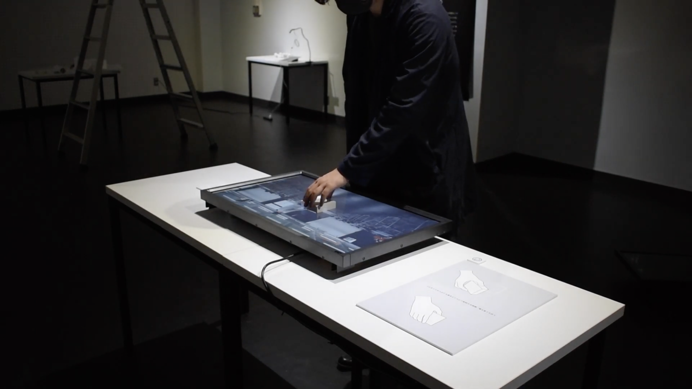
-
映像・モノ・人の関係性を再考する
干渉する鑑賞
2020.9 映像インスタレーション
- 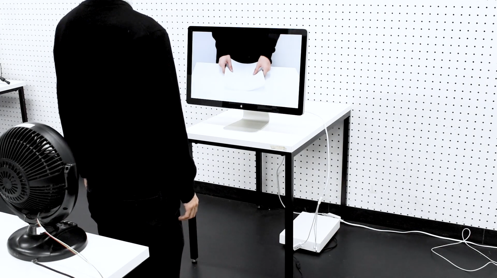
-
スマートフォンと指の関係を
構築するドミノ倒し
2019.12 インタラクション
- 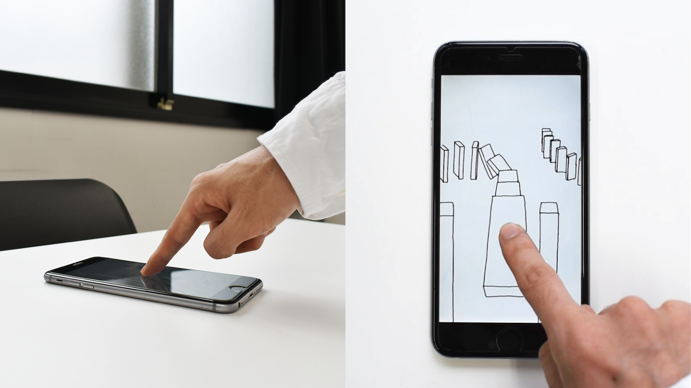
-
認知に関わる本質的な手がかりを探す
窓
2020.5 映像インスタレーション
- 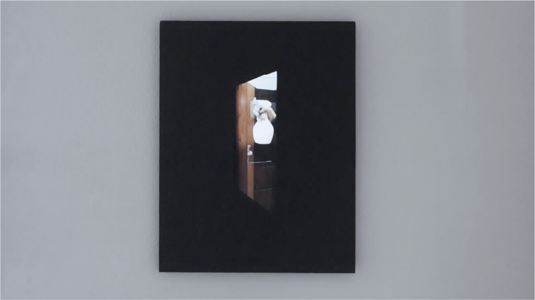
-
"描く"感覚をアップデートする
DRAW
2020.8 Processing

-
常識を逆手にとって、驚きを与える
映像を撮るありえない映像
2020.8 映像
- 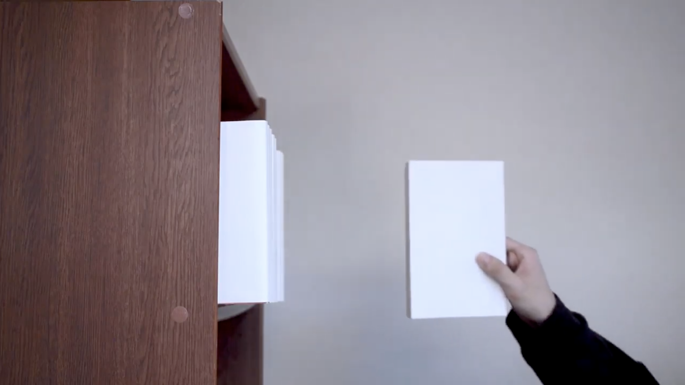
-
「なるほど!」と感じてもらえる体験展示
し展
2019.11 展示/インスタレーション

-
心地よさの探求Web
2019.10 Web , アニメーション
- 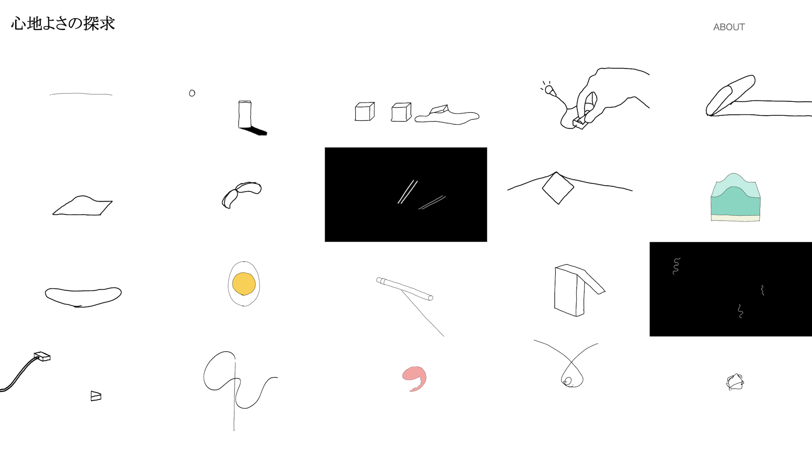
-
データの可視化
2019.12 インフォグラフィック
- 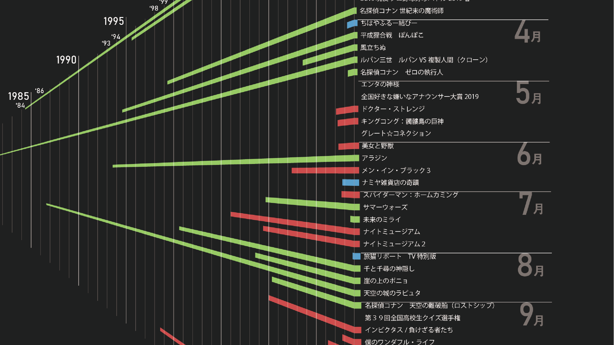
-
身近な物を操作機構にした
インタラクション2020.9 インタラクション
- 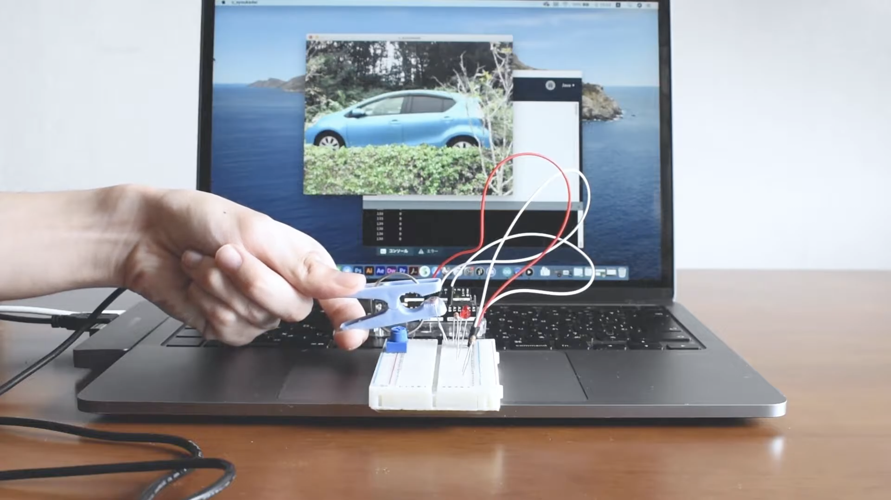
-
Twitterを使って今を可視化する
2020.10 プログラミングアート
- 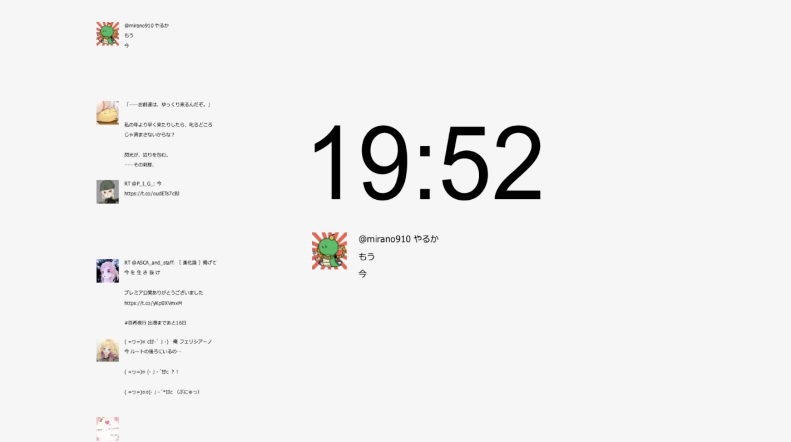
-
モノと映像を組み合わせる
2020.5 映像
- 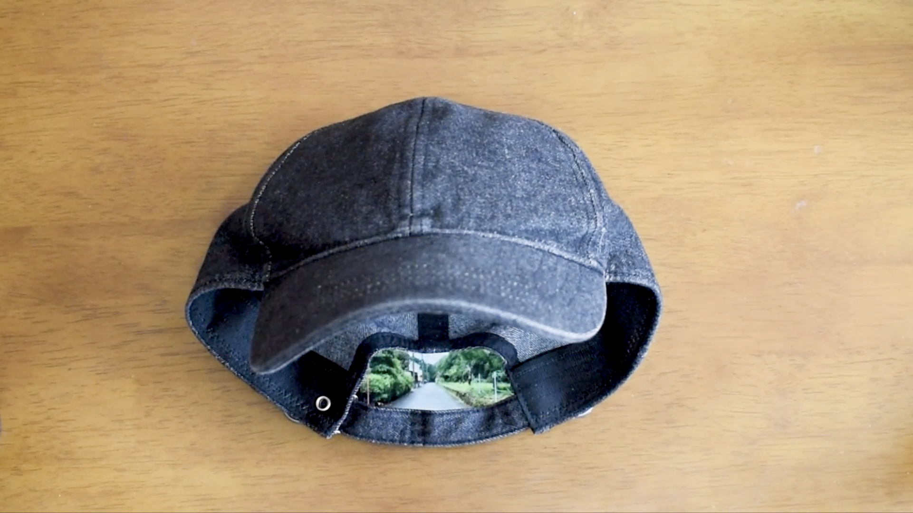
-
普段とは違った視点を
獲得する2020.4 映像
- 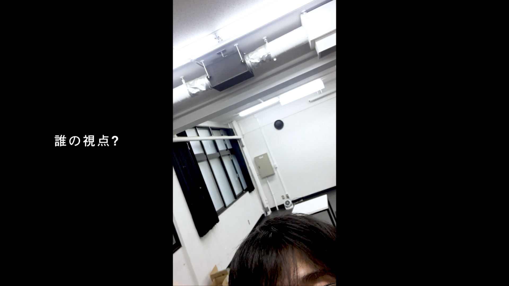
-
空間の発生
2022.9 映像、インスタレーション
- 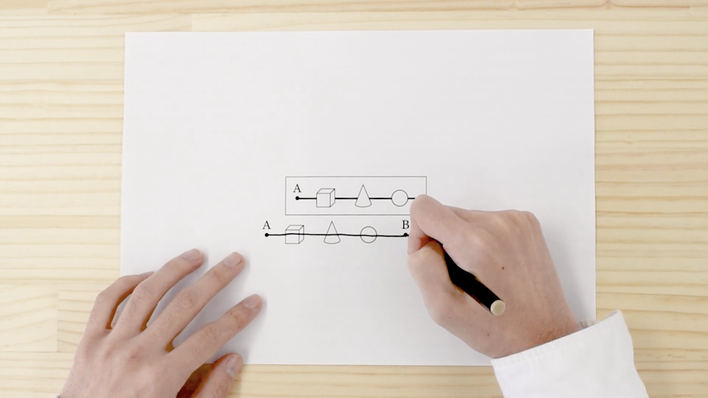
-
お椀の造形とブランディング
2019.7 3DCG/ブランディング
- 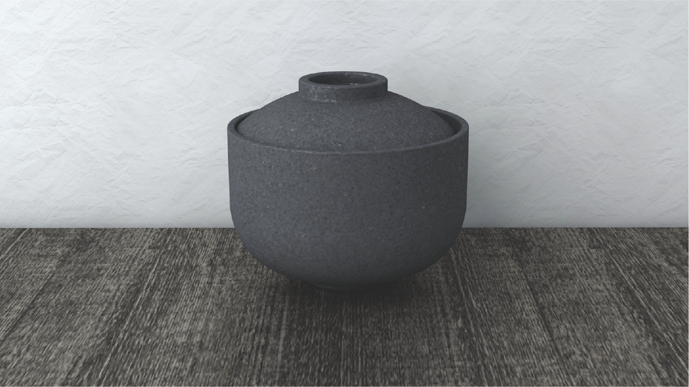
-
傾けて置くボトル
2020.7 デザイン

-
自主制作スマホゲーム
2022.6 プログラミング
- 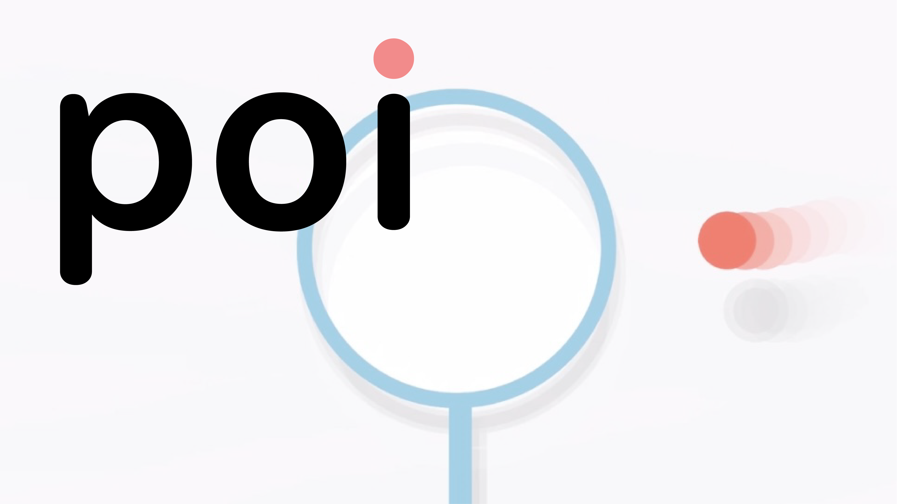